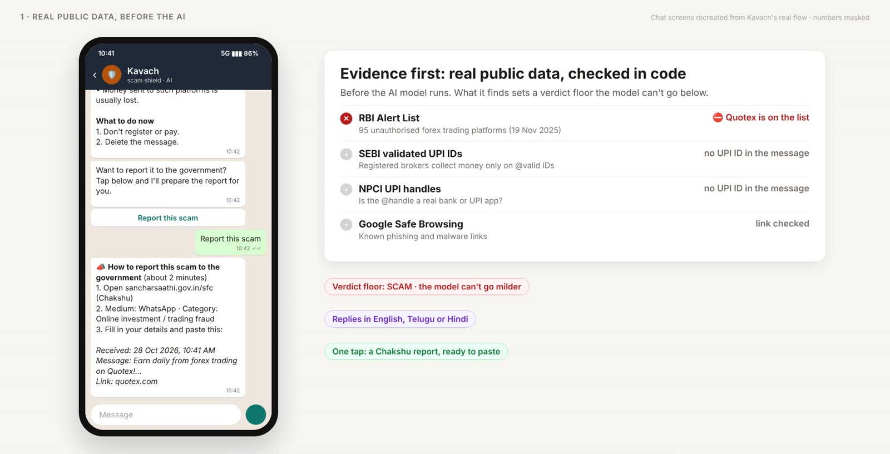
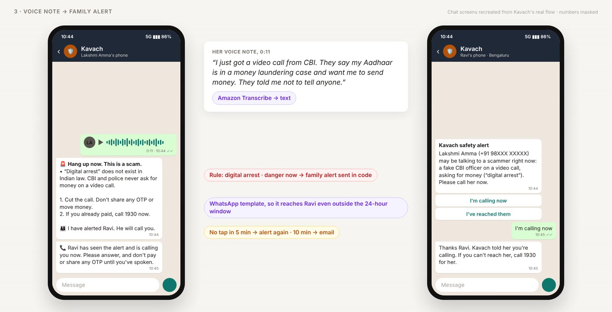
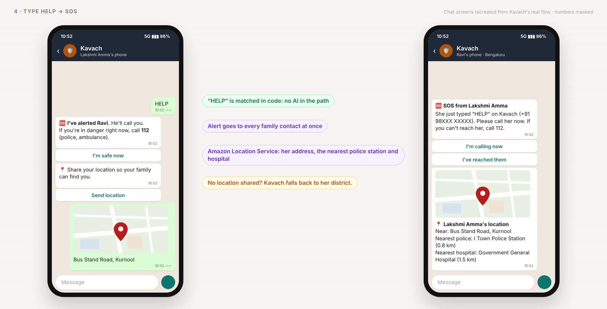
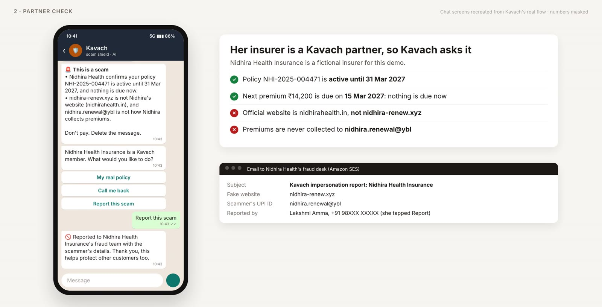
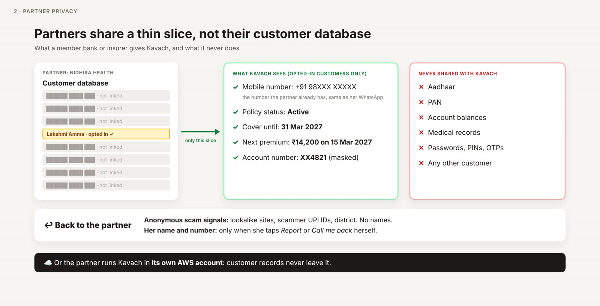
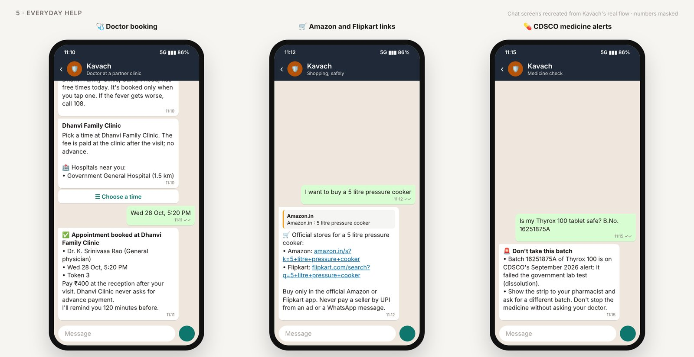
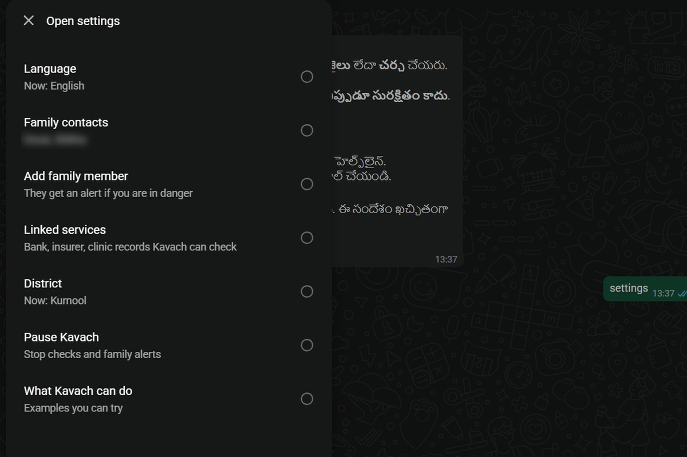
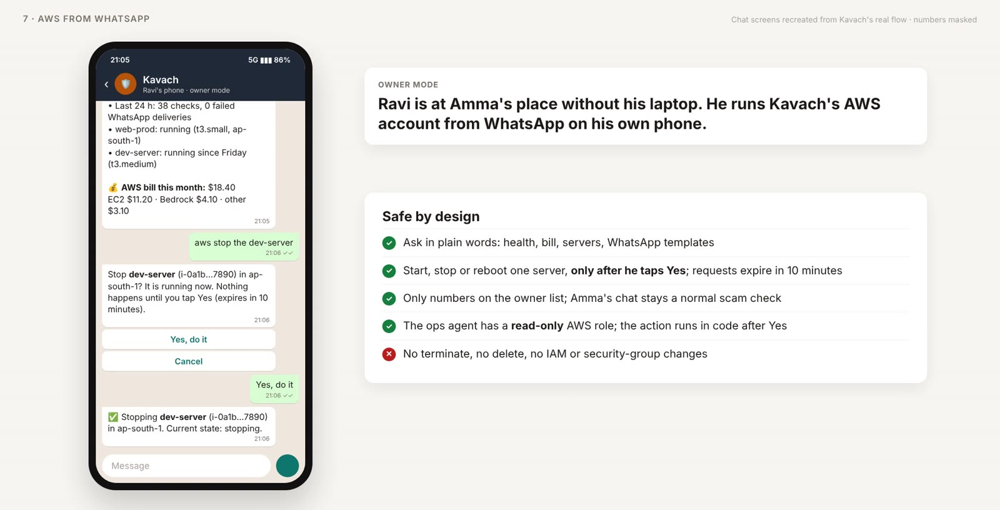
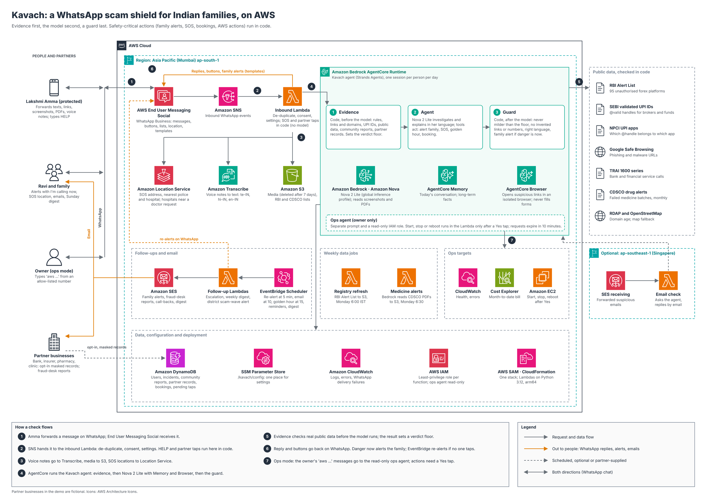

Forward anything suspicious. Know in a minute if it's a scam.
Kavach Scam Shield checks messages, links, screenshots, PDFs and voice notes on WhatsApp against real public data, and pulls your family in when someone is in danger.
తెలుగు · हिन्दी · English


How it works
Three steps, on the app she already uses
Forward it
Send Kavach the message, link, screenshot, PDF, or a voice note describing a call. No app to install, no commands to learn.
Evidence first
Real public data is checked in code before the AI model runs, and sets a minimum verdict the model can't soften.
Clear answer
A verdict in Telugu, Hindi or English, the reasons, exactly what to do next, and a one-tap report to the government.
Real public data
Checked against the sources India already publishes
- RBI Alert List of unauthorised forex trading platforms, refreshed weekly
- SEBI validated UPI IDs: registered brokers collect money only on @valid handles
- NPCI's list of UPI apps: which @handle belongs to which app
- Google Safe Browsing for phishing and malware links
- TRAI's 1600 series for genuine bank and financial service calls
- CDSCO drug alerts: medicine batches that failed government lab tests
- Lookalike websites, new domains, community reports from other families
One-tap reporting
After a scam verdict, one tap prepares the report for the government's Chakshu portal (sancharsaathi.gov.in/sfc): the medium, the category and the exact text to paste. Kavach adds the cybercrime.gov.in Check Suspect steps for numbers and UPI IDs, the 1909 sender check for SMS, and the 1930 helpline if money was paid.
When someone is in danger
The family steps in within seconds


- Family alert: danger happening now, in her own words, alerts the family she chose, with I'm calling now and I've reached them buttons.
- Escalation: if nobody taps, Kavach alerts again at 5 minutes and emails at 10.
- Golden hour: money already sent? Kavach prepares the 1930 complaint, emails the bank's fraud desk and family, and checks in after 15 minutes.
- Safety-critical steps run in code, so an alert never depends on the AI remembering to send it.
Type HELP: SOS with her location
- One word alerts every family contact in seconds, with no AI in the path.
- She taps Send location; Amazon Location Service adds her address and the nearest police station and hospital.
- I'm safe now stands everyone down. No location shared? Kavach falls back to her district.


Partner businesses
Her bank or insurer answers for itself
When a message claims to come from a Kavach partner, Kavach checks it against her own record instead of guessing: "your policy lapses today" against "active until 31 March 2027". One tap shows the real policy, asks for a call back, or sends the fake site to the partner's fraud desk.

A thin, masked slice, never the customer database
- Only customers who opt in are linked, by the mobile number the partner already has.
- Kavach sees policy or account status, key dates and masked account numbers.
- Partners get anonymous scam signals, and her details only when she taps Report or Call me back.
- A bank or insurer can run Kavach inside its own AWS account, so records never leave it.
- Never shared: Aadhaar, PAN, balances, medical records, passwords, PINs, OTPs, other customers.


Everyday help
Useful on ordinary days too
Doctor booking
"I have fever since yesterday" finds the right doctor at a partner clinic, lists real hospitals nearby, and books a token when she taps a time, with a reminder before the visit.
Safe shopping
"I want to buy a pressure cooker" gets official Amazon and Flipkart links, never an ad's lookalike, plus a warning when a deal looks too good.
Medicine check
A batch number or a photo of the strip is checked against CDSCO's monthly alerts: "Don't take this batch, show it to your pharmacist."

Settings
One tap, in her language
- MENU opens everything: language, family contacts, linked services, district, pause.
- Change language midway; every reply follows.
- Add family by name and number or by sharing a contact card, and send a test alert.
- Linked services shows which partners are linked, what each shares, and an Unlink button.
- Send STOP to pause at any time; HELP still works.


Also built in
More ways Kavach looks out for families
Screenshots, PDFs and emails
Amazon Nova reads screenshots and PDF "notices". Forward a suspicious email and the verdict comes back by email.
Voice notes
Telugu, Hindi and English voice notes are transcribed with Amazon Transcribe, so she can just describe the call.
District scam-wave alerts
When reports of one scam spike in a district, everyone there who uses Kavach gets a WhatsApp warning.
Sunday family digest
Family gets a weekly email: what was checked, what was blocked, and anything to follow up.


For the person who runs it
AWS from WhatsApp, safely
- Ask in plain words for Kavach's health, the month's AWS bill, servers and WhatsApp templates.
- Start, stop or reboot one server, only after a Yes tap; requests expire in 10 minutes.
- Only allow-listed owner numbers; the ops agent has a read-only AWS role.
- No terminate, no delete, no IAM or security-group changes.
Under the hood
Evidence first, the model second, a guard last
WhatsApp reaches Kavach through AWS End User Messaging Social. A Strands agent on Amazon Bedrock AgentCore, with Memory and Browser, runs Amazon Nova 2 Lite. Code checks the evidence before the model runs, and a guard after it makes sure a reply is never milder than the facts, never invents a link or number, and comes in her language.

- AWS End User Messaging Social
- Amazon Bedrock AgentCore
- Amazon Nova
- AWS Lambda
- Amazon SNS
- Amazon DynamoDB
- Amazon S3
- Amazon EventBridge Scheduler
- Amazon SES
- Amazon Transcribe
- Amazon Location Service
- AWS Systems Manager
- Amazon CloudWatch
- AWS IAM
- AWS SAM
Safety and privacy
Built to protect, not to collect
- Kavach never asks for OTPs, PINs, passwords or card numbers.
- Kavach asks for consent before checking anything. Send STOP at any time to turn it off.
- Files you send are deleted after 7 days. Community reports keep the scammer's identifiers, never yours.
- Links are opened in an isolated cloud browser that never fills in forms.
- Partners share only a masked, opt-in slice of a customer's record. Read the privacy policy.
Chat screens in the images are recreated from Kavach's real flow, with phone numbers masked. Partner businesses shown are fictional demo partners.